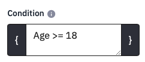

4 Branch to different pages depending on participants answers
You may often want to skip a question or more depending upon a respondent’s answers to a question. For example, if they answer No to the consent question you need to skip the whole survey. If you have used other survey platforms you may know this as Skip Logic or Branching.
With Limesurvey’s ability to conditionally display questions depending upon the value of previous answers, there is no need for branching – you just set a question or group’s condition so that it is not displayed.
Even better, you can make questions appear only when another question has been answered in a relevant way.
In this respect, Limesurvey is much simpler and more flexible than other platforms.
To demonstrate how this works, we will make people who do not consent skip past the questions to see a Sorry message, and add Thank you people for people who did consent and who have done the survey.
4.1 Make a question group conditional
If you preview your survey, you will find that even if you say No to the consent question, the survey carries on to ask you your Sex and Age.
We need to set a condition for the Demographics group, and any other questions, so that it is only shown when Consent has been given and the answer recorded is Y.

To do this, click the Demographics group name to see the Group Summary, and then click Edit. At the bottom of the page, set the Condition

You are entering some computer code that specifies the question name on the left, and the value it has to have on the right. Be careful to get these exactly correct – case matters.
Also make sure to use plain "straight" quote marks, not “smart”
curly quotes.
There are two things that might seem odd here:
You need two equals signs because in computer coding, two == is a comparator that tests whether two things have the same value, but one = sign is an operator that makes something be equal to a value.
The buttons said Yes and No, but the value recorded is Y or N
When you click Save and close to return to the summary, it now shows this:
If you make mistakes, you may see this instead – the red box shows that Limesurvey does not know of a question called ‘consent’ with a little c
If you hover the mouse over the red = sign, it will tell you that you are assigning a new value to a variable instead of comparing it. It lets you get the value wrong though – nothing it can do about that.
When you are writing conditions, do take a moment to check this helpful diagnostic information.
4.2 Making an individual question conditional
Setting a Condition at the Group level means that it applies to all the questions in that group. It is easy to change, and most surveys will not have many Groups.
You can also set the Condition at a Question level. If you click on Sex, to see the Question Summary, you can see that it has inherited the Group relevance setting from the group’s Condition. Consent is now green to show that it is a valid question name. The Sex question’s condition is set to 1, which means ‘TRUE’ or ‘Always’ show, provided that the Group is being shown.

Edit the Sex question, and in General Settings, change the Condition to
Age >= 18

Preview the survey and give consent, and you should then see the Age question. Enter an Age value of 18 or more, and the Sex question will appear. Change the Age to under 18, and it will vanish. Any value you chose for Sex will still be there – all that is changing is whether or not the Question is displayed.
If you want a more complex condition, for example, only people between
18 and 40, then you can combine them using AND e.g.,
Age\>=18 AND Age\<=40. Alternatively, you could say Age=18 OR Age=40
if you only want 18 and 40 year olds to answer a question. To negate a
condition, put an exclamation mark before it, e.g.,
!(Age=18 OR Age=40) means everyone who is NOT 18 or 40.
Being able to make any question’s display conditional on other answers, even if they are on the same screen, is a powerful feature of Limesurvey.
4.3 Re-ordering questions and groups
Normally, you would want a conditional question to appear after the one it depends on, not before. You can reorder questions in the Structure by dragging them – click the matrix of six dots to the left of the Question name, and drag Age above Sex. Now when you preview the survey, and enter an Age of 18 or more, the Sex question appears in a sensible place.
You can also re-order Groups by dragging their title up or down, and can move questions between groups.
4.4 Add a Thank You and Sorry Message
Add a new group at the end of the survey and name it Thank you.
Set Condition to
Consent=="Y"Add a Text Display question thankyou to say ‘Thank you! Please do not close the browser until you have returned to SONA to receive your credit!’
Add another block and name it Sorry.
Set Condition to
Consent=="N"Add a Text Display question sorry to this block to say ‘Sorry that you do not want to participate. Please close the browser window now.’
Preview your survey and try giving and not giving consent.